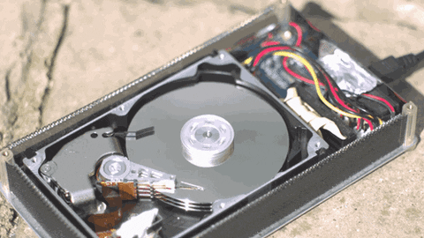

For All Your PC Gaming Information
Welcome to
When you’re looking to buy a new computer or laptop, or if you’re researching ways to upgrade your machine, you’ll see a lot of references to both hard drives and SSDs, but which one is best for you? If you’ve got a desktop PC, then you’ll have the luxury of being able to install both types of hard drive at once. If you go down that route, this guide will help you identify the best ways to use those drives to maximize their performance.
If you have a pre-built desktop PC (that you have owned for quite a while) it will most likely have a traditional hard disk drive, on which the operating system, along with any applications you install, and your files and folders, are stored. A traditional hard drive contains a circular disc – known as a platter – that stores your data. The disc spins, allowing the read-write arm to read data on the disc (or write data to it) as it passes. The faster the platter spins, the faster the hard drive works, which can impact how quickly your operating system responds, and how long it takes applications installed on the drive to load and open. However, hard drives are not very strond and can break from physical force.
SSD also stands for "solid state drive". It uses newer technology than the hard drive because it doesnt have any physical moving partsand instead uses NAND software. The more NAND there is in an SSD the more storage it has. There are two types of connection for an SSD: NVME M.2 and SATA. NVME is significantly faster than SATA and is newer technology. They are also better made for laptops beacuse unlike hard drives they are stornger and more robust.
Usually people have an SSD to put their operating system on and then have a hard drive for all of their games and applications so that when they turn on their computerthe startup is fast and you can get into your computer quickly. some people also put important programs on the SSD or a game that they play reguarly so it will load up quicker. However, most people do not use an SSD as their main storage because you can get way more space on a hard drive for way less money. It will be significantly slower than an SSD though but SSDs are expensive and dont really hold alot of storage. Taking this into consideration, an ideal setup would have 1 or 2 (maybye even 3) hard drives to accumulate to around 2TB or 3TB then have a very fast NVME SSD with your very most important programs installed on it. The SSD should only be a maximum of 1TB if your on a budget.
The speed of a hard drive depends on the drives RPM (revelutions per minuite) most hard drives will be around 5,500RPM(100MB/second) but is is best to aim for one with 7,200RPM(150MB/second). If you have the money then you can get some with 10,000RPM but you then might as well just get an SSD. SSDs dont depend on RPMs but however they depend on the technology they are running on. SATA SSDs will usually transfer data at 550MB/second. SATA is the slowest type of SSD but you are still gettind around 4 times the performance of a Hard Drive. If you use a PCIE (plugs in underneath you hard drive on the same type of socket) Or NVME M.2 then you can see a real difference in performace annd you can usually get around 1.5GB per second! Now thats really fast.